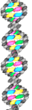
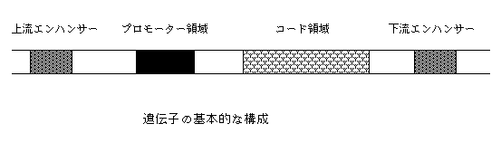

| 遺伝子情報処理 Home Page |
| 配列解析 |
| アライメント |
| 遺伝子同定 |
|
 |
遺伝子同定 |
 構造情報と制御情報
構造情報と制御情報
遺伝子は「コード領域」と「制御情報」の組とよぶことができます(下図)。

コード領域の予測
DNAやRNAは3種類の塩基の並びかたでアミノ酸を指定します。このアミノ酸を指定する3個の塩基の並びをコドンといいます。コード領域の開始点と終了点にはそれぞれ「開始コドン」「終止コドン」という特別のコドンが割り当てられています。
コドンは3個の塩基によって指定されているので、同じ塩基配列に対して概念的には3個の異なる読み方(frame)が存在します。このうちのひとつが選択されて、開始コドンから同じ読み枠中の終止コドンまでがタンパク質に翻訳されます。
開始コドンから終止コドンまでのタンパク質をコードしている可能性のある領域をORF(Open Reading Frame)と呼びます。
このORFのうち実際に翻訳される領域をコード領域と呼びます。
主なコード領域の予測手法には以下のものがあります。
- コドン頻度表を用いる方法
調べたい生物種についてあらかじめコドン使用頻度の統計がとられている場合に用います。 - 三塩基周期性に注目する方法
配列に現れる3文字の周期性に注目するFicketの予測法(TestCode法)が一般的です。与えられた配列断片から8つの量を計算し、各々の値に適当な重み付けを行なって各塩基の位置におけるスコアを計算し、その値によってコード領域かどうかの判定を行ないます。 - ニューラルネットを用いる方法(GRAIL法)
ある塩基長(可変)のウィンドウ領域でコード領域の特徴を多数のプログラム群から検出し、その値をニューラルネットで組み合わせてコード領域の予測を行ないます。
制御配列情報の解読
ゲノム配列中には遺伝子が正しい状況で発現するためにさまざまな制御シグナルが存在しています。これらの制御シグナルをコードしている領域を発見し、その制御内容を読むことが制御配列情報の解読です。
上記のコード領域予測と合わせて、ゲノム配列中の遺伝子の位置を推定するという遺伝子同定システムが開発されつつあります。
DNAの2本鎖のうちRNAにコピーされるのはどちらか片方だけです。まず2本鎖の一部がほどけ、ほどけた部分にRNAポリメラーゼという特別なタンパク質がつき、遺伝子毎に決まった転写開始点から一定の方向にDNAの情報をRNAにコピーしていきます。
コード領域の上流部分には「プロモーター領域」と呼ばれる部分があります。
この領域は
- 遺伝子スイッチのオン／オフに関わる転写制御部分
多数の調節タンパク質＝転写因子＝によって認識される配列パターンの集まり - 転写開始位置を指定する配列パターン
この部分を専用のタンパク質が認識し、それを元にRNAポリメラーゼがDNAに結合
プロモーター領域の他に、エンハンサーと呼ばれる領域も遺伝子スイッチのオン／オフに関与しています。この領域は遺伝子の転写開始点から数キロ塩基離れていても働いたり遺伝子の上流や下流にあるなど、位置の自由度に特徴があります。
エンハンサーはスイッチのオン／オフを強めたり弱めたりすると考えられており、広い意味では転写因子と統合して理解されていくと考えられています。
遺伝子同定システム
コード領域や制御因子等、さまざまな遺伝子配列の特徴に関する知識を駆使して、長大なゲノム配列上に散在している遺伝子を同定しようという遺伝子同定(gene identification)が現在活発に研究されています。いくつかのプログラムはWWW上で利用したり、メールサーバという形で利用することが出来ます。